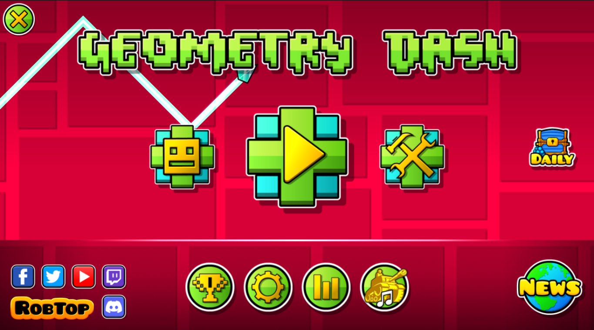
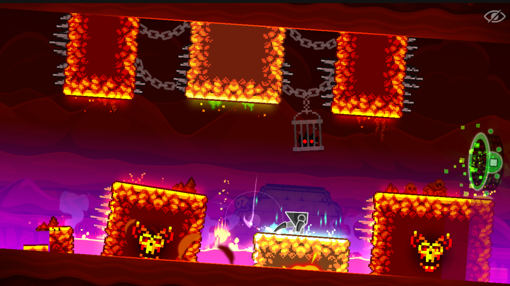

Geometry Dash is a platformer rhythm game (mostly) using only one button to control a character. Timing is key, and different game modes change the clicks needed to pass a level. Normal levels completely restart after one mistake, so consistency is needed.

Geometry Dash was made in 2013 and was based on the popular game called "The Impossible Game", for iOS and Android, originally a mobile game. Then, it was converted and made into the more popular Steam game.
Geometry Dash pushes the human limit of timing and precision, and is widely known to be one of the hardest games in the world.
